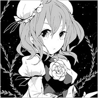

- Welcome to Touhou Wiki!
- Please register to edit. For assistance, check in with our Discord server or IRC channel.
Kasen Ibaraki
Kasen Ibaraki ibaɽakʲi kaseɴ | |
|---|---|
 Kasen Ibaraki in Antinomy of Common Flowers The One-Armed, Horned HermitMore Character Titles | |
| Nickname |
|
| Species | |
| Abilities |
Guiding animals |
| Location |
Youkai Mountain (Senkai), also seen at the Hakurei Shrine |
Music Themes | |
| |
Appearances | |
| Official Games | |
| |
| Print Works | |
| |
Kasen Ibaraki (茨木 華扇 Ibaraki Kasen), who also goes by the pseudonym Ibarakasen (茨華仙) or just Kasen (華仙), is the main protagonist of Wild and Horned Hermit. She is a mysterious self-proclaimed hermit living in the mountains. Possessing an artificial arm and various special abilities, she can often be seen dispensing knowledge to Reimu Hakurei, Marisa Kirisame, Sanae Kochiya and others.
Kasen is also a Sage of Gensokyo and, as of Wild and Horned Hermit Chapter 49 Part 2, is confirmed to be an oni and one of the Big Four of the Mountain.
General Information[edit]
Kasen has appeared as the main protagonist in Wild and Horned Hermit and has appeared in Chapter 16 and 17 of Oriental Sacred Place. She also appears as a playable character in Urban Legend in Limbo, and Antinomy of Common Flowers.
Personality[edit]
Kasen is kind and polite to nearly everyone. She is always willing to lend a word of advice or teach a lesson, but is often seen as preachy and overly critical of others.
Abilities[edit]
When she informed Reimu Hakurei about what she can do, she answered "secret" and "I can do various things", but since in her character settings and captions there have been no explanations about her abilities, and what ability she possesses is unclear. Although there are several things that can be seen as ability-like, it's not definite whether the ones listed below are because of an "ability to <do something>" or if it is an innate ability of her race, or if it is a kind of sorcery that hermits can learn as mentioned in Perfect Memento in Strict Sense.
- Guiding of animals
Kasen is able to communicate with animals, including cryptids, beast youkai and dragons, along with having a great deal of knowledge about them. She knows the antidotes to obscure venoms, as well as the processes that lead an animal to become various types of youkai and how to affect them. She also employs a number of trained animals as servants, whom she can apparently summon to her side. In addition to regular animals like monkeys, snakes and birds, Kasen and Reimu rode on the back of the Unnamed Dapeng, and is even able to use such uncommon creatures like the children of dragons. Especially concerning the children of dragons, she even said, "whatever I say, they will listen". According to Komachi, the employment of animals is Kasen's signature move.
On the official site, it was stated that she possessed the ability to guide animals, but since it was not stated as "ability to guiding animals", it is probably not an ability name.
- Artificial arm
Kasen's bandaged right arm is secretly an artificial one, apparently consisting of vapourous black smoke, and Kasen is capable of remotely controlling it and detaching it to act independently. Her arm is also capable of crushing vengeful spirits, removing them from the cycle of reincarnation entirely; Komachi Onozuka appears unsure how exactly Kasen does this. Of note, her arm is blown apart when it touches the Hakurei Yin-Yang Orb, implying that it has youkai properties.
- To guide and transfigure youkai
It was shown in chapter 16 of Oriental Sacred Place that she herself said that she admonished the yamainu who attacked humans and turned them into youkai, gave a recommendation to be a youkai whose stomach is satisfied even without attacking humans, and transfigured the human-protecting youkai into an okuri-inu. Afterwards, the yamainu, who was actually transfigured into a protective dog, in order to protect humans, drove away the Three Fairies of Light who were scheming mischief.
When Kasen said that she did something to the yamainu and hoisted her bandaged right arm in a meaningful manner, even Luna Child felt a sense of doubt that a human-eating beast would listen to preaching, so therefore it's probably not simply due to preaching, but a kind of ability. Of course, this could possibly just be a part of her ability to use animals.
- To hide her home using fangshu
This ability Kasen uses is probably only one aspect of fangshu (方書), it's unknown whether she's skilled in the other parts of the art. One must use this sorcery reach Kasen's hidden house, as it is only accessible through a special path opened by fangshu. Even when a blizzard occurs outside, the area around her house was in a clearing. Marisa remarked that it looks as of it were in another world or different plane.
After the incident in Ten Desires, Toyosatomimi no Miko and Mononobe no Futo created another world called Senkai and moved there, but it is not known whether or not the sorcery that Kasen used to hide her home and the sorcery used to create Senkai are of the same kind.
- Miscellaneous
- Hermit arts: While she may or may not be a real hermit, Kasen has used the common hermit technique of hiding her dwelling place, preventing anyone from reaching it unless they follow a specific (regularly changed) route.
- Creating light orbs: In chapter 10 of Wild and Horned Hermit Kasen creates orbs of light from her right hand that last for a long time move them by mere thought. This appears to be a generic application of mystic power, rather than a specific ability of Kasen's. Since she can freely use light orbs of the size and number she wants, it an be seen that she used a massive quantity of small ones as well as single big ones.
- Instant movement: In the second chapter, she appeared in the background of the offertory box in the Hakurei Shrine without warning, surprising Sanae Kochiya who came to visit. It has not been specified what range of distance she is able to move, or if she can move anywhere. Also, in the seventh chapter, she performed a movement such that she was in the background of the offertory box without being noticed.
- The Hakurei Barrier Kasen is capable of creating openings in the barrier to and from the outside world, which she does repeatedly in Urban Legend in Limbo as well as "off-panel" a few times in Wild and Horned Hermit. Notably, in Marisa's storyline in Urban Legend in Limbo, her incantation for opening it up is "In the name of the Sage XXXX, I command: Release the ban of 130 years!" This possibly was a foreshadowing to the reveal of her position in Wild and Horned Hermit Chapter 35.
- Her true strength: In Urban Legend in Limbo, after fighting Reimu, she said to herself that using her full strength, in that case, would be risky for "various reasons". It's unknown if this means that it could be dangerous doing it near the shrine (because of the Barrier) or against Reimu, or if it would be risky for herself since she is probably just pretending to be a hermit without being one.
Possessions[edit]
Kasen owns the Ibaraki Box of a Hundred Medicines, which can cure all illnesses or heal any injury to the person who drinks from it.
One Armed, Horned[edit]
She appeared to have two arms, however, when Reimu Hakurei seized her right arm, as if she it bent flabbily and smoked leaked out of the gaps in her bandages. In Urban Legend in Limbo and Antinomy of Common Flowers, Kasen's artificial right arm contorts and uses the smoke within to attack.
In one instance, this arm touched Reimu's yin-yang orb and reacted violently, scattering away. Consequently, Kasen immediately reconstructed her annihilated right arm. As the yin-yang orb is the shintai of the shrine blessed with exterminating youkai, it is likely that Kasen's arm was made from some sort of youkai essence. When she had the artificial arm, she needed to drink from the Ibaraki Box of a Hundred Medicines regularly so the arm didn't rot.
The "horned" in her title was long since speculated to be related to her hair buns possibly hiding horns of some sort.
As of Wild and Horned Hermit Chapter 49 Part 2, Kasen rejoined with her actual right arm and returned to her true form as an oni. As a part of this transformation, actual horns bursted from the buns on her head, destroying the headwear in the process.
Backstory[edit]
Kasen is one of the Sages of Gensokyo and was apart of the now disbanded Big Four of the Mountain.
Little else is known about any other details of Kasen's history so far. However, a newspaper article in Symposium of Post-mysticism reveals that she has been known as a hermit at Youkai Mountain since at least 1980, if not earlier. It is also known that Kasen lost her arm at some point in the past and replaced it with a artificial one, although she got her arm back in Chapter 49 Part 2 of Wild and Horned Hermit.
Character Design[edit]

Origin[edit]
Kasen is based on the oni Ibaraki-douji. Ibaraki-douji was one of the oni who ran the oni headquarters on Mt. Ooe and broke into Japan on a rampage. Although Ibaraki-doji is most commonly portrayed as a subordinate to Shuten-douji (who Suika Ibuki is based on), there are also variations to the myth such as Ibaraki-douji being the daugher of Shuten-doji, or as Ibaraki-doji was the only female oni present, there was a variation where she was his lover.
While Shuten-douji's gang was being massacred by Minamoto no Yorimitsu, Ibaraki-douji fought with one of his allies,Watanabe no Tsuna, but fled when she saw Shuten-douji fall in battle.
The survivor Ibaraki-doji assailed humans once again afterwards, and in doing so, even assailed Watanabe no Tsuna. However, Tsuna was able to cut off the arm of Ibaraki-douji, sending the oni running away once again. This is the likely basis for Kasen (formerly) missing her right arm.
Name[edit]
Although she introduces herself in Wild and Horned Hermit as Ibarakasen (茨華仙), or Kasen (華仙) for short, this is merely her pseudonym. Her real name is Kasen Ibaraki (茨木 華扇 Ibaraki Kasen)[1][2]; note the different spellings of "Kasen". Her surname, Ibaraki (茨木) comes from Ibaraki-douji and means "thorn bush" (rose bush), while Kasen (華扇) is a real, commonly used Japanese name written with the characters for "flower" and "fan".
Her hermit name, 茨華仙 (Ibarakasen) translates to "rose-flower hermit" and is often just shortened to 華仙 (Kasen lit. "flower hermit", a homophone of her actual name, 華扇 Kasen lit. "flower fan"). "Kasen" is also homophonous with the first two characters in 何仙姑 (He Xiangu, JP: Kasenko), the only female member of the Eight Immortals of Taoist mythology. Xiangu owns a fenghuang, making it likely to be the basis of Kasen's affinity with animals. The name "Kasen" (何仙) also appears in the Japanese detective novel series, 塗仏の宴 宴の支度 (Nuribotoke no Utage, Utage no Shitaku lit. "Nuribotoke's Banquet, Banquet in Preparation"). It's plausible that ZUN, as a lover of mystery novels, may have taken inspiration from there.
Design[edit]
In her original appearance, she has red eyes and shoulder-length pink hair with Chinese-styled buns. Her right arm is wrapped in bandages, concealing a gaseous black smoke. She wears a white top and a green skirt. Over her top is a maroon tabard with that has a thorny vine motif and large rose-shaped ornament just below collar level. Her single-strap shoes are colored the same as her tabard and a shackle lays on her left wrist.
Her severed arm is generally the same in terms of design, with the only notable differences being the pressence of horns, fangs, slit-pupil eyes, claw-like nails and sharper hair. The tabard and skirt she wears is colored different from Kasen's, being two seperate shades of blue. Shackles are present on all four of her limbs, with her leg shackles having iron ball-and-chains attached to them.
Kasen's true form, with her right arm reconnected to her body, has her gain horns were her buns previously were and grow knee-length hair. Her tabard is also noticeably longer and her top becomes sleeveless. She retains her shackles on all four limbs, with iron bearings attached to all of them and her slit-eyed pupils. The color of the tabard and skirt is unknown at this time.
Other Information[edit]
Species[edit]
In chapter 49 of the final WaHH arc, Kasen fuses with her separated arm, thus confirming once and for all her true name and title: Kasen Ibaraki - Wile and Heinous Oni. However, this does not mean that she cannot be a hermit as well. She may very well be an oni who wants to take the path of a hermit. But, she could also very well be just an oni who knows hermit techniques.
Young appearance[edit]
According to something Reimu said in the first chapter and Perfect Memento in Strict Sense, appearance-wise hermits look like aged. Among this, as Kasen has a juvenile appearance; this is the basis that her existence is different from that of an ordinary hermit. However, in Ten Desires, the appearance-wise young hermit Seiga Kaku appeared, meaning that doesn't mean that not all hermits need to appear aged.
Food[edit]
According to Perfect Memento in Strict Sense, pretty much all hermits who have passed five hundred years of age don't need food, and simply ingesting fog or haze will be enough. However, Kasen not only eats food ordinarily but also seems to have a sweet tooth. She is frequently shown eating sweets in Wild and Horned Hermit and Urban Legend in Limbo.
She proposed having hot pot in chapter 2 and ate dango in chapter 7 of Wild and Horned Hermit. Also, in chapter 10, when the stranded Marisa Kirisame strayed into her home, Kasen treated her to something like nikuman, suggesting that Kasen normally keeps a supply of food in her home. Even if supposing she have not reached five hundred years of age, this can be said to be a non-hermit-like trait.
Kasen's Appearances[edit]
Literature[edit]
| Attention: This section is a stub and it needs expanding with more information related to the section's topic. If you can add to it in any way, please do so. |
- Wild and Horned Hermit
- Main article: Wild and Horned Hermit
Kasen meets Marisa Kirisame outside the Human Village as the latter was running an errand for Reimu Hakurei. In the beginning, she appears to be nothing but a simple, strange ascetic, but it's all a guise. Her real motive for appearing at the Hakurei Shrine is to search for the Kappa's Arm, thought by her to be at the Hakurei Shrine. Second, according to her, her objective is to shut down the connection between humans and the Former Hell. What that means is unclear, but she takes great interest in the runaway evil spirits at the Underground Geyser Center, and is able to destroy them with her bandaged arm which, when unwrapped, takes the form of black ash or smoke. This brings her to the attention of Komachi Onozuka, whose superiors are concerned about Kasen's movements. As she continues to act in secret, she also attempts to teach Reimu, Sanae Kochiya, and Marisa how to be better people, investigates and wraps herself up in various small time incidents, and introduces Reimu and the others to her power to control various beasts.
- Oriental Sacred Place
- Forbidden Scrollery
Spin-offs[edit]
- Urban Legend in Limbo
Kasen's first in-game appearance is in the fighting game Urban Legend in Limbo.
Relationships[edit]
Reimu Hakurei[edit]
Kasen remembers Reimu Hakurei from long before, having visited the Hakurei Shrine many times in the past, although Reimu's memory failed her and she had to be reminded who Kasen was. She's mostly earned Reimu's annoyance, who dislikes sermons and doesn't want her shrine to smell of them. She mostly thinks of Kasen as a nagging, preachy busybody. However, Reimu often concedes, either because Kasen is usually right or she doesn't want to deal with her. Kasen is openly critical of Reimu, believing her to be too greedy and slack in her duties.
Marisa Kirisame[edit]
Initially thinking she was just a strange hermit, Marisa Kirisame also met Kasen some time before Wild and Horned Hermit and is the first to remember who she was. Once reunited, Kasen is invited by Marisa to visit more often, to the disdain of Reimu. Marisa hopes that Kasen will teach her any life extending techniques and is more than willing to listen to Kasen's preaching in exchange.
Kasen's Pets[edit]
Kasen's pets include the Unnamed Dragon, Unnamed Dapeng, Mukou, Saouchi, Kanda and Kume. They're mostly cryptids who can be summoned at any time, such as when she called on the child dragon to abduct Reimu and used the dapeng for transportation. However, there was a point at which the raijuu she captured previously felt lonesome and ran away. She is also shown to have a snake and monkey.
Sages of Gensokyo[edit]
It is unknown how long Yukari and Kasen have known each other, but both are youkai sages. The monologue in Perfect Memento in Strict Sense states it was the youkai sages who proposed the Hakurei Barrier, so Yukari and Kasen probably knew each other since at least that time.
After Kasen came down from the mountain in the present day, Yukari assumed Kasen was always "on her side" and that Kasen's actions were intended to help Yukari's ideals. Kasen finally got fed up by the time of Wild and Horned Hermit Chapter 35 and angrily informed Yukari that she wasn't on her side. This caused Yukari a brief visible moment of distress before she regained her composure, but she also stated she would wait as long as it takes for Kasen to come to her side.
Kasen's dream self in Antinomy of Common Flowers calls Yukari a coward who gets others to do her work for her because she's too scared to do it herself. As dream selves are unrestrained exaggerations of the real being, it is uncertain how much of this reflects Kasen's actual view of Yukari, but from Doremy's explanation of dream selves in Reisen's scenario, it does mean Kasen's normal feelings fall along those lines at least somewhat.
Kasen has known Okina since a while back as a fellow sage, and commented how it was a misfortune getting to know her. She also claims to know how Okina works and acts around others, but any actual interaction has not been shown.
Minor Relationships[edit]
| Attention: This section is a stub and it needs expanding with more information related to the section's topic. If you can add to it in any way, please do so. |
Sanae Kochiya lives on the Youkai Mountain near to Kasen and are considered neighbors. They meet fairly often and are on friendly enough terms. Kasen is a bit critical of Sanae as well, albeit to a much lesser extent than Reimu. Sanae describes her as living in a large mansion, corrected by Kasen as being a training dojo.
Despite being friendly enough with Sanae, she is highly suspicious of Kanako and Suwako's schemes to attain faith and their inability to handle the Underground Geyser Center's dangers.
Komachi Onozuka and Kasen are slightly antagonistic toward each other. Ordered to keep Kasen under surveillance, Komachi is distrusting of her, even to the point of threatening her with her scythe – although the death god doesn't appear to be serious about it.
When Suika Ibuki appeared at the Hakurei Shrine, Kasen quickly fled the scene in order to avoid her. She appears familiar with Suika, but her relationship with her is unknown, and she appears hesitant about letting Suika know about her current status. However, after learning that Kasen borrowed some sake from Yuugi, Suika realised that Kasen was planning something and decided to leave her alone. She also knows Kasen's true form.
Gallery[edit]
A sketch of Kasen Ibaraki by Aya Azuma and Tanabe during Nikenme to celebrate Rex Magazine 100th issue
Kasen art from Urban Legend in Limbo
Kasen with her pets as seen in Oriental Sacred Place

Kasen on the Vol. 1 cover of Wild and Horned Hermit
Kasen on the Vol. 2 cover of Wild and Horned Hermit

Kasen on the Vol. 3 cover of Wild and Horned Hermit
Kasen on the Vol. 3 cover of Wild and Horned Hermit

Kasen on the Vol. 4 cover of Wild and Horned Hermit
Kasen on the Vol. 5 cover of Wild and Horned Hermit

Kasen on the Vol. 6 cover of Wild and Horned Hermit

Kasen on the Vol. 7 cover of Wild and Horned Hermit

Kasen on the Vol. 8 cover of Wild and Horned Hermit

Kasen in Curiosities of Lotus Asia
Skills[edit]
Spell Cards[edit]
| Name | Translated | Comments | Games | Stage | ||
|---|---|---|---|---|---|---|
| Total: 15 | ||||||
| 包符「義腕プロテウス」 | Wrap Sign "Prosthetic Arm Proteus" | ULiL AoCF |
Use Use | |||
| 龍符「ドラゴンズグロウル」 | Dragon Sign "Dragon's Growl" | ULiL AoCF |
Use Use | |||
| 鷹符「ホークビーコン」 | Hawk Sign "Hawk Beacon" | ULiL AoCF |
Use Use | |||
| ＊猿の手よ！敵を握りつぶせ！＊ | *Monkey's Paw! Crush my Enemy!* | ULiL AoCF |
Use-LW Use-LW | |||
| 雷符「微速の務光」 | Thunder Sign "Slow-Speed Mukou" | ULiL | Story | |||
| ＊死ぬまで願いを叶える手＊ | *Hand that Grants Wishes Until Death* | ULiL | Story | |||
| ＊猿の手はオカルトな夢を見る＊ | *The Monkey's Paw Dreams of the Occult* | ULiL | Story | |||
| 虎符「両門の彭祖」 | Tiger Sign "Houso of Both Gates" | Used only in the Comiket 87 demo version; not present in the web demo nor the full release | ULiL | Story | ||
| 霊鷹符「鷹による夢想封印ハンティング」 | Spirit Hawk Sign "Fantasy Seal Hunting Done by a Hawk" | Co-owner with Reimu | AoCF | Story | ||
| 雷霊符「務光の雷弾夢想封印」 | Thunder Spirit Sign "Mukou's Thunder Shot Fantasy Seal" | Co-owner with Reimu | AoCF | Story | ||
| 龍蹴符「ドラゴンズ飛鳥井キック」 | Dragon Kick Sign "Dragon's Asuka'i Kick" | Co-owner with Reimu | AoCF | Story | ||
| 雷化符「務光と葉っぱの弾幕変化」 | Thunder Transform Sign "Mukou and Leaf Danmaku Transformation" | Co-owner with Mamizou | AoCF | Story | ||
| 龍化符「ドラゴンズエイリアンカプセル」 | Dragon Transform Sign "Dragon's Alien Capsule" | Co-owner with Mamizou | AoCF | Story | ||
| 雷符「務光の雷霆閃光夢幻弾」 | Thunder Sign "Mukou's Thunderclap Flash Phantasmal Shot" | Used by Kasen's Dream World self | AoCF | Story | ||
| 龍符「ドラゴンズオプティカルドリーム」 | Dragon Sign "Dragon's Optical Dream" | Used by Kasen's Dream World self | AoCF | Story | ||
Additional Information[edit]
- Kasen was one of the possibilities ZUN had in mind for the Extra Stage boss of Ten Desires, along with Byakuren Hijiri. Mamizou Futatsuiwa took that place.
- Kasen is mentioned in Ten Desires' ending no.4, where it's explaining that Marisa heard from Kasen that the ultimate goal of Taoism is to achieve immortality.
- Kasen's title of "The One-armed Horned Hermit" (片腕有角の仙人) appears to be derived from the titular character of the Noh play "One-horned Hermit" (一角仙人 Ikkaku Sennin).
- From a historical perspective, the Noh play suggests that Kasen may not exactly be a hermit, but a rishi, a person who gives wisdom. They are different from hermits in that they are sometimes regarded as Buddhist saints.
- Kasen recites one of Miyako no Yoshika's poetry in her first appearance. According to legends, Ibaraki-douji was deeply impressed after reading Miyako no Yoshika's works.
- Kasen is one of the few manga-débuted characters to become a major character in a game. Some others are Aya Shameimaru and the Three Fairies of Light.
Fandom[edit]
Official Profiles[edit]
|  | 茨木華扇（号：茨華仙） 片腕有角の仙人 山に棲み、修行を重ねる仙人。し |
Ibaraki Kasen (Pseudonym: Ibarakasen) One-armed horned hermit A hermit living in the mountains, repeatedly training. She's said to appear frequently in the village and shrine and give them a nice scold. Having the ability to guide animals, even controling such fantastic beasts as dragons and the cryptid Dapeng. |
Official Sources[edit]
- 2010/07/24 ~ current Wild and Horned Hermit - All chapters
- 2011/11/25 Ten Desires special and two-part interview with ZUN
- 2011/10/26 Oriental Sacred Place - Chapter 16
References[edit]
- ↑ 1.0 1.1 "キャラクター紹介" [Character Introduction] (in 日本語). Ichijinsha. 2011. Unknown parameter
|month=ignored (help) - ↑ Oriental Sacred Place Chapter 16
| This page is part of Project Characters, a Touhou Wiki project that aims to write proper descriptions for all official characters of Touhou Project. Please keep the character page guidelines in mind when contributing. |